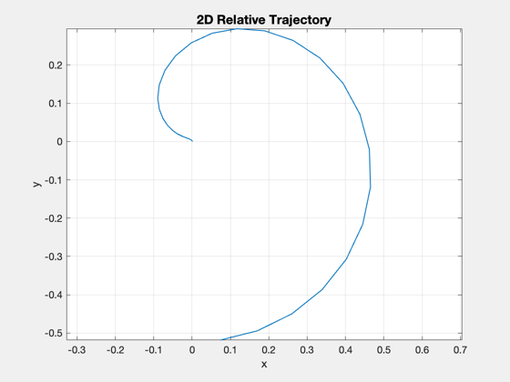
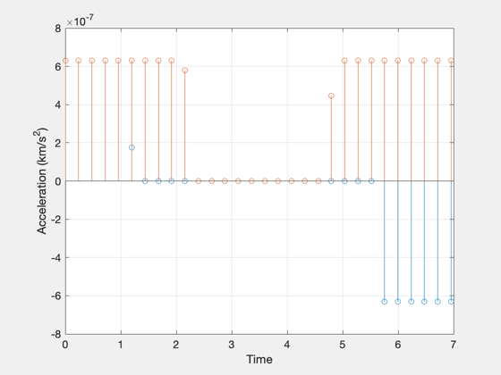
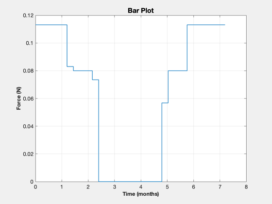
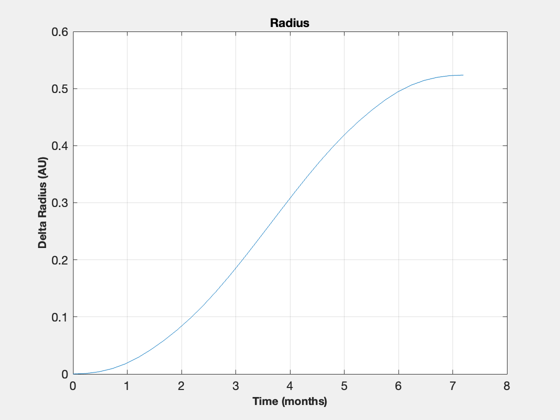

Perform an optimal 2D transfer from Earth to Mars orbits.
This performs a discrete optimization of a linearized system using Simplex. The mass of the spacecraft (and the acceleration) is assumed to be constant.
See also Constant, BarPlot, NewFig, TimeLabl, TitleS, XLabelS, YLabelS, Mag, OptimalTrajectory, LTSpiral, LinOrb, Planets
Contents
%------------------------------------------------------------------------------- % Copyright (c) 2002 Princeton Satellite Systems, Inc. All rights reserved. %------------------------------------------------------------------------------- clear f;
Specify planets: Earth and Mars
p = Planets( 'rad', [3 4] ); AU = Constant('au'); muSun = Constant('mu sun'); aEarth = AU*p.a(1); aMars = AU*p.a(2);
Spacecraft
thrust = 0.04; % N mass = 127; % kg factor = 2; % increase the thrust for the optimization if it fails to converge
Low-thrust spiral duration
ex. for 0.4 N and 127 kg, duration is 20.7 days
dVEarthToMars = LTSpiral( p.a(1)*AU, p.a(2)*AU, [], muSun ); % duration is deltaV/acceleration duration = dVEarthToMars*1000/(thrust/mass)/86400; fprintf('\nLow thrust spiral DV: %g km/s\n',dVEarthToMars); fprintf('Low thrust spiral duration: %g days\n',duration);
Low thrust spiral DV: 5.65517 km/s Low thrust spiral duration: 207.814 days
Linearize the orbit
state x: [dr;rtheta;z;ddr/dt;drtheta/dt;dz/dt]
n = sqrt(muSun/aEarth)/aEarth; [a, b, c, d] = LinOrb( [], n, [] );
We only care about the orbit radius, radial velocity and tangential velocity
%----------------------------------------------------------------------------- f.a = a([1 4 5],[1 4 5]); f.b = b([1 4 5],[1 2]); % inputs are radial and tangential accel nDays = ceil(1.05*duration); nPts = 30; dT = nDays*86400/nPts; t = (0:nPts)*dT; % fixed end time x0 = [0;0;0]; % [dr;ddr/dt;drtheta/dt] rF = aMars - aEarth; % the change in radius (km) yDot = -3*n*rF/2; % the final tangential velocity (km/s) xF = [rF;0;yDot]; uMax = factor*thrust/mass*1e-3; % maximum control (km/s^2) [0.0105/127] % u is the control - the acceleration profile [radial;tangential] [err, u, x] = OptimalTrajectory( x0, xF, t, uMax, f );
Display the output
[tP, tL] = TimeLabl( t ); mU = Mag(u); uF = 1000*mU*mass; % convert to force dV = sum(mU)*dT; vOverR = x(3,:)./x(1,:); vOverR(isnan(vOverR)) = 0; theta = cumtrapz(vOverR)*dT; c = cos( theta ); s = sin( theta ); Plot2D( x(1,:).*c/AU, x(1,:).*s/AU, 'x','y','2D Relative Trajectory') axis equal fprintf('\nOptimal 2D DV: %g km/s\n',dV); NewFig('Optimal Control') stem(tP(1:end-1),u') ylabel('Acceleration (km/s^2)') xlabel('Time') grid on BarPlot(tP, uF ) XLabelS(tL); YLabelS('Force (N)'); NewFig('Radius') plot( tP, x(1,:)/AU); XLabelS(tL); YLabelS('Delta Radius (AU)'); grid on TitleS('Radius') %-------------------------------------- % PSS internal file version information %-------------------------------------- % $Id: e9505b3489202a0c275489a6fe04d2070ca1769b $
Optimal 2D DV: 9.6239 km/s   